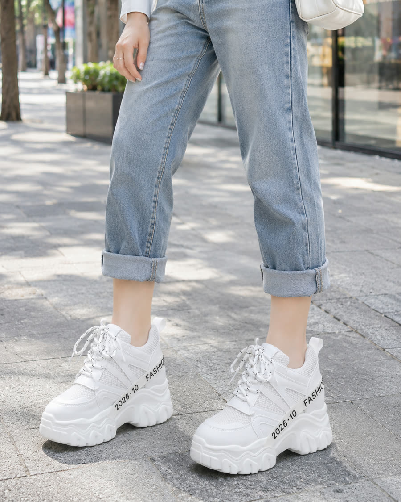

Giày độn đế 11cm Hàn Quốc siêu nhẹ — Review hack dáng JB17
Muốn đôi chân dài miên man như người mẫu mà vẫn đi bộ, dạo phố cả ngày không mỏi? JB17 là sneaker đế độn 11cm chuẩn Hàn Quốc — hack dáng mạnh nhưng nhờ đế PU siêu nhẹ và form "lòng thuyền" ôm chân, bước đi vẫn nhẹ bẫng, tự nhiên.


11cm — cao cỡ nào, có khó đi không?
11cm là mức "ăn gian" chiều cao đáng kể: cao hơn hẳn giày thường, tôn dáng thấy rõ ngay từ bước đầu. Đây chưa phải mốc cao nhất của Jebee (kịch trần là 13cm — mẫu JB707), nên 11cm vẫn nằm trong vùng dễ kiểm soát: người quen đi độn 7–8cm chuyển lên chỉ cần vài ngày là bước đi tự nhiên như sneaker thường.
Bí quyết nằm ở phần đế độn thiết kế "tàng hình" — nhìn vào không ai nghĩ là giày độn, chỉ thấy dáng bạn cao ráo, cân đối hơn.


Ảnh thật JB17: (trái) banner độn đế 11cm · (phải) đế cao tôn dáng, form ôm chân.
Đi 11cm cả ngày có mỏi không?
Ít hơn bạn nghĩ. JB17 dùng đế Polyurethane (PU) siêu nhẹ, đàn hồi tốt, chống mài mòn — đi lên chân nhẹ bẫng chứ không nặng nề như nhiều dòng đế dày. Phần form "lòng thuyền" thiết kế chuẩn nhân trắc học, nâng đỡ vòm bàn chân và bảo vệ gót, khớp gối khi di chuyển.


Da Microfiber — điểm cộng của JB17
Khác với da công nghiệp thường, JB17 dùng da Microfiber cao cấp — dòng da nhân tạo mô phỏng da thật tới 90%: bền, chống trầy xước, chống thấm nước và đặc biệt thoáng khí, không lo bí bách hay gây mùi. Màu trắng dễ phối, hợp đủ phong cách.
Giày độn 11cm hợp với ai?
- Nàng muốn hack dáng mạnh — cao thêm 11cm, tôn dáng rõ rệt hơn hẳn mốc 7–9cm.
- Người đã quen giày độn và muốn "lên đời" chiều cao mà vẫn đi lại thoải mái.
- Bạn mê phong cách Hàn Quốc — form chunky trẻ trung, năng động, dễ phối.
Phối đồ với sneaker độn 11cm
- Quần jean ống đứng / skinny — để lộ phần đế cao, chân dài tức thì.
- Váy ngắn, chân váy chữ A — khoe đôi chân, cân bằng nét nữ tính với sneaker khoẻ khoắn.
- Quần ống rộng lưng cao — "giấu" đế độn mà vẫn ăn gian dáng, tổng thể thanh thoát.
Phân vân chọn mức độn? Đọc thêm: nên chọn giày độn 7cm hay 11–13cm?
Thông số nhanh mẫu JB17
| Tiêu chí | JB17 | Ghi chú |
|---|---|---|
| Tăng chiều cao | 11cm | Hack dáng mạnh, dưới mốc 13cm |
| Chất liệu | Da Microfiber | Mô phỏng da thật 90%, thoáng khí |
| Đế | PU siêu nhẹ | Đàn hồi, chống mài mòn |
| Size | 35–39 | Form chuẩn; mu chân dày tăng 1 size |
Câu hỏi thường gặp
Giày độn đế 11cm đi có khó không?
11cm cao rõ rệt nhưng vẫn đi được cả ngày nhờ đế PU siêu nhẹ và form lòng thuyền ôm chân. Người quen đi 7–8cm chuyển lên chỉ cần vài ngày làm quen. Xem thêm: giày độn đế có đau chân không?
11cm có phải mức cao nhất của Jebee?
Không — kịch trần là 13cm (mẫu JB707). 11cm thuộc nhóm cao, tôn dáng rất mạnh nhưng dễ đi hơn mốc 13cm.
JB17 có giá bao nhiêu, còn size nào?
Giá và size còn hàng xem trực tiếp tại trang mẫu JB17 hoặc nhắn Zalo để được tư vấn nhanh.
Muốn hack dáng 11cm mà đi vẫn êm cả ngày?
Nhắn Jebee size chân & chiều cao mong muốn — tụi mình tư vấn mẫu JB17 (hoặc mẫu hợp hơn) trong 1 phút, freeship toàn quốc, đổi size miễn phí 15 ngày.
Nhắn Zalo tư vấn Xem mẫu JB17